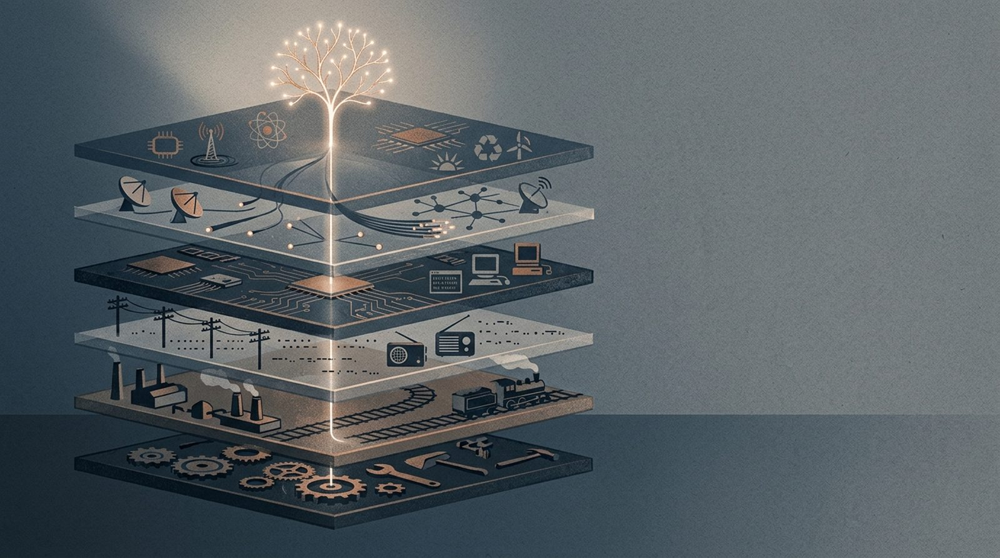

David Berkowitz
I build the platforms other things run on, and the teams that build them.
Substrate, not features
Every company on my résumé looks different: component software, home theater, smartphones, smart TVs, robotics research. The job underneath was the same each time. Build the layer that other teams build on, make it reliable, and get it into their hands on a schedule.
- Component software and open standardsIBM · CI Labs (the IBM / Apple / Novell / Justsystem consortium) · Object Management Group
Early work on OpenDoc and CommonPoint interoperability, media management, and query-by-image-content research turned into product. VP Engineering at CI Labs, defining component validation and registration services and representing the consortium at OMG.
- Consumer electronics platformsPhilips · Palo Alto, Sunnyvale, San Jose
Led the DVX8000 Multimedia Home Theater software from UI to device drivers, delivered in seven months. Grew into running a shared engineering pool for Philips businesses in Silicon Valley, then the US satellite of Philips' global technology engine with P&L responsibility. Set-top boxes, wireless media streaming, networking reference designs, the TiVo software-quality program, ISO 9001:2000.
- The media stack and the WebKit decisionPalm · Milpitas, Sunnyvale
Built Palm's in-house multimedia team to cut third-party royalties and ship differentiated features across the Treo line, Centro, LifeDrive and Tungsten. Then built a new web-engine team and drove the decision to adopt the WebKit browser core, the foundation webOS was built on.
- Peer-to-peer and IoT frameworksNokia Research Center · Sunnyvale
Engineering employee #1 of an internal startup inside NRC. Hired and led a ten-person team that created Nokia Connect, a peer-to-peer data and service sharing layer that worked in proximity or through the cloud, across Linux, MeeGo, Windows, Mac and Android. Transferred it into product and ran hackathons in Sunnyvale, Chicago, Beijing and Espoo.
- webOS at global scaleLG Electronics · Santa Clara, Seoul, Bangalore, Kiev, St. Petersburg
Senior Director for the webOS platform: direction to 150 engineers across five sites, five on-time platform releases to the Smart TV and appliance product teams, large-scale Scrum across twenty teams. Wrote and executed my own succession plan.
- Research software and the AI agent harnessToyota Research Institute · Los Altos
Lead the Research Software Engineering team that lets researchers across TRI turn ideas into working, maintainable software. Coach teams on agile practice and on working with AI agents. Author of the internal SOLVE and Leadership Grid MAP frameworks.
The harness is the core product, not model selection.On building for AI agents, the current layer of the same work.
Where the work happened
- 2021 – nowDirector, Research Software Engineering & AI/Agile CoachToyota Research Institute, Los Altos CA
Manage and mentor a core team of software experts who facilitate research projects. Direct key initiatives with internal and external resources. Support all development teams with the right process and tooling. Define metrics and report progress, challenges and impediments.
- 2018 – 2021Senior Technical Program Manager, Automated Driving SoftwareToyota Research Institute
- 2015 – 2017Senior Director, webOS PlatformLG Electronics, Santa Clara CA
Global webOS development and deployment to internal product teams. Directly managed web, media, connectivity and application-framework teams. Built a productive, cost-effective relationship with the Bangalore teams.
- 2010 – 2014Director of EngineeringNokia Research Center / CTO Advanced Engineering, Sunnyvale CA
Nokia Connect and its extension into IoT use cases. Cross-platform development infrastructure. Innovation partnership with the Nokia Mobile Phones Beijing team.
- 2005 – 2009Director of EngineeringPalm, Milpitas and Sunnyvale CA
Media technology, then media and browser technology, then delivery systems: build, test automation, source control and reporting for the webOS and Palm Pre teams. Drove a full static-analysis review of all C/C++ product code.
- 1997 – 2005Software Manager → Director of Engineering → General ManagerPhilips Electronics, Palo Alto / Sunnyvale / San Jose CA
Philips Multimedia Center, Center for Manufacturing Technology, and Philips Applied Technologies.
- earlierProject Lead, Architect, Programmer → VP EngineeringIBM; CI Labs, Cupertino CA
Platform work from the IBM PC era through OpenDoc. Products included CommonPoint / OpenDoc interoperability, Ultimedia Manager and Workplace, InfoExplorer, PEX and XGKS graphics.
How I work
AI and Agile, together
Both are genuinely mine. Agile is how a team learns fast without breaking itself; AI agents are the newest thing a team has to learn to work with. Coaching both at once is the differentiator.
Process fitted to the work
Flexible application of development process, from chaos to agile to ISO and CMM. The process serves the team and the product, never the other way around.
Teams that outlast me
Repeated creation, coaching and management of high-functioning teams, across Silicon Valley, Europe and Asia. I write succession plans and execute them.
Metrics people can act on
Analysis and presentation of complex data: defining what to measure, tracking it, and reporting progress and impediments without theater.
Vendors and partners
Negotiation and management of subcontractors and technology partners, from chipset vendors to offshore teams.
Strengths
CliftonStrengths: Learner, Intellection, Empathy, Achiever, Relator. I think out loud, I'd rather understand than win, and I keep the relationships.
A creative practice, run like a platform
Outside work I run what I call the Atelier: one pipeline that ties together the AI tools I make things with, twenty-odd projects at a time. The same instinct as the day job. Build the substrate once, then let the projects flow through it.
A few things that came out of it recently. Each one is a single HTML page: open it, play with it, read the explanation underneath.
Slab Limit
Volume by slicing, Archimedes-style: a rotating 3D stack of slabs that converges on the solid as you add more of them.
Open → Interactive · mathTriangle Limit
A circle filled with N triangles. Watch the area and perimeter close in on πr² and 2πr as N grows.
Open → Prototype · learning gamePip's Short-i Island
A playable first scene of a phonics game for four-year-olds: hear the sound, blend the word, find the object, color the page in.
Play → Product briefShort-i Island: the plan
The design brief behind the prototype: core loop, story arc, build plan, risks, and the reading-science that chose the mechanics.
Read →Selected pieces
- The Bigger Picture: Constraints as the Mother of Invention
"Constraints produce elegance. This is not a motivational poster. It is a historical fact with a 60-year paper trail." Starts with Nygaard and Dahl trying to fit a Norwegian fjord into a computer and inventing the object along the way.
Essay · PDF · available on request - A Field Guide to David Berkowitz
A self-authored guide for those who love, work with, or have contact with him. Concedes that the subject is "capable of turning a minor misunderstanding into a Socratic seminar you did not sign up for."
Second edition · available on request - Otroversion · Elder · Bottega
A manifesto trilogy in progress: on being socially capable and still not quite from here; on the later working life; on the workshop as a way of making things.
In progress - SOLVE
A problem-framing method for research software teams, written for internal use at TRI.
Framework · internal